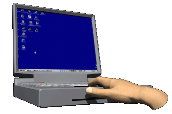
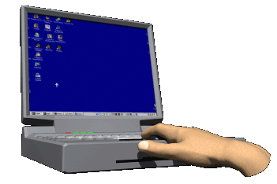
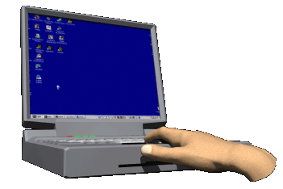

| |
|
INGENIERIA DE SISTEMAS |
|
perfil profesional y campo ocupacional el ingeniero de sistemas es un profesional con sólida formación en las ciencias naturales y ciencias sociales a nivel básico y aplicado, con conocimientos en aspectos tecnológicos que le permitan analizar, comprender, modelar y optimizar el proceso de toma de decisiones en una organización, donde el factor tecnología de información tiene una labor integradora. es un profesional capaz de modelar estructuras y procesos organizativos, diseñar y administrar los recursos de tecnología de información, construir e implantar aplicaciones de tecnología informática, así como de diseñar soluciones a problemas complejos.. además es un profesional con espíritu crítico y creativo, expone sus ideas con claridad y elocuencia, valora el trabajo como medio de realización personal y social. es formado para el trabajo de equipo, disciplinado con hábitos y competencias para el aprendizaje permanente a lo largo de toda la vida, capaz de adaptarse al cambio en un entorno mundial y con estilo proactivo, con un adecuado dominio de la comunicación oral y escrita, en español y otros idiomas, con conocimiento de la realidad nacional y mundial, así como de los recursos geopolíticos y naturales del país.. |
|
